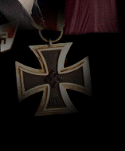

| The NeoTek Revolution has claimed the life of this webpage. Simply to let the author know that he has an exploit in his system that has gone unknown to the programmer. Next time watch your server side software.
Whats up with the bitches that just hack pages and put in 3r33t sp33K? Damn choose a better language than ascii bullshit. Now for the full and total unauthorized access! -Ne0Tek |
Many Many shouts go out to _§kî++£è§_, Andain, NetProfit, [-Antix-], KOR, Phrozen Crew {keep it real!} 'n all of da crew!
|
| Links
Links Links Links |